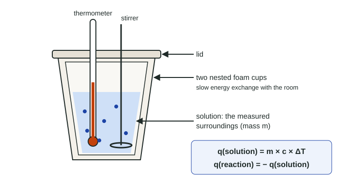

Heat Capacity and Calorimetry
Calorimetry measures the energy of a process from a temperature change.
Part 1 · Hook
Why this matters
Part 2 · Before you start
What this builds on
Part 3 · Prerequisite check
Quick check before you start
1. In an insulated container, energy lost by a hot object equals
- energy gained by the cold object
- half the energy gained by the cold object
- zero
- the temperature change
Show the answer
Energy is conserved; with no leaks, every joule lost by one is gained by the other.
- Correct: energy gained by the cold object:
- half the energy gained by the cold object:
- zero:
- the temperature change:
2. 50.0 mL of 0.200 M HCl contains how many moles of HCl?
- 0.0100 mol
- 10.0 mol
- 0.250 mol
- 0.00400 mol
Show the answer
Moles = volume in L × molarity = 0.0500 L × 0.200 mol/L = 0.0100 mol.
- Correct: 0.0100 mol:
- 10.0 mol:
- 0.250 mol:
- 0.00400 mol:
3. If the water around a reaction cools, the reaction is
- endothermic
- exothermic
- neither
- impossible to classify
Show the answer
The water (surroundings) lost energy to the reaction (system), so the reaction absorbed energy.
- Correct: endothermic:
- exothermic:
- neither:
- impossible to classify:
Part 4 · See it
See it first

Part 5 · Step by step
How it works, step by step
- A reaction runs in a measured mass of solution in an insulated cupalmost all the energy it releases or absorbs goes into or out of the solution
- The solution's temperature changes by ΔTq(solution) = m × c × ΔT gives the energy the solution gained (positive) or lost (negative)
- Energy is conservedq(reaction) = −q(solution)
- The energy depends on how much reactsΔH per mole = q(reaction) ÷ moles of the limiting reactant (or product named)
- Energy leaks to the room or ΔT is misreadthe calculated |ΔH| comes out too small or too large in a predictable direction
Part 6 · Key ideas
Key ideas
- Specific heat capacity, c, is the energy to warm 1 g by 1 °C; water's is 4.18 J/(g·°C). Heat capacity is for a whole object: C = m × c.
- q = m × c × ΔT, with ΔT = T(final) − T(initial) and m the mass of everything that changes temperature.
- In a calorimeter, q(reaction) = −q(solution): a warmer solution means an exothermic reaction.
- ΔH per mole = q(reaction) ÷ moles that react. Watch kJ vs J and the sign.
- Energy lost to the room makes the measured |ΔH| too small.
Part 7 · Misconception
A common mistake
The wrong idea: The solution warmed by 6.67 °C and gained 2.79 kJ, so ΔH for the reaction is +2.79 kJ.
What actually happens: The solution is the surroundings. The reaction lost what the solution gained, so q(reaction) = −2.79 kJ, and ΔH per mole divides that by the moles that reacted.
Part 8 · Check yourself
Check yourself
Exam-style questions. Anything you miss goes into your review queue.
Data table
Neutralization in a coffee-cup calorimeter
A student pours 50.0 mL of 1.00 M HCl(aq) and 50.0 mL of 1.00 M NaOH(aq), both at the same starting temperature, into a coffee-cup calorimeter, stirs, and records the highest temperature reached. The reaction is H⁺(aq) + OH⁻(aq) → H₂O(l).
| Quantity | Value |
|---|---|
| Volume of 1.00 M HCl | 50.0 mL |
| Volume of 1.00 M NaOH | 50.0 mL |
| Mass of combined solution | 100.0 g |
| Starting temperature | 21.48 °C |
| Highest temperature | 28.15 °C |
| Specific heat of the solution | 4.18 J/(g·°C) |
1. Calculate the energy, in kJ, gained by the solution in the calorimeter.
Type a number and its unit.
Show the answer
q = m × c × ΔT = 100.0 g × 4.18 J/(g·°C) × (28.15 − 21.48) °C = 100.0 × 4.18 × 6.67 = 2788.1 J = 2.79 kJ (three significant figures, set by 4.18 and 6.67).
- Answer: 2.79 kJ
2. How many moles of water are formed in the reaction?
Type a number and its unit.
Show the answer
50.0 mL × (1 L / 1000 mL) × 1.00 mol/L = 0.0500 mol of H⁺, and the same amount of OH⁻. They react 1 : 1, so 0.0500 mol of H₂O forms.
- Answer: 0.0500 mol
3. Calculate ΔH for the reaction, in kJ per mole of water formed.
Type a number and its unit.
Show the answer
The solution gained 2.788 kJ, so the reaction released it: q(reaction) = −2.788 kJ. ΔH = −2.788 kJ / 0.0500 mol = −55.76 kJ/mol → −55.8 kJ/mol. The sign is negative because the reaction is exothermic.
- Answer: -55.8 kJ/mol
4. The student repeats the trial in a single uncovered cup, so some energy escapes to the room. How does the calculated ΔH compare with the first result?
- More negative, because the reaction releases more energy in an open cup
- Unchanged, because the same amounts of acid and base react
- Positive, because energy now flows from the cup into the room
- Less negative, because the measured temperature rise is smaller
Show the answer
The calculation assumes every joule released warms the solution. Losses to the room lower the highest temperature, so the calculated q and |ΔH| come out too small: ΔH is less negative than the true value.
- More negative, because the reaction releases more energy in an open cup: The reaction releases the same energy per mole; less of it is caught by the solution.
- Unchanged, because the same amounts of acid and base react: The same energy is released, but less is measured; the calculation uses the measured ΔT.
- Positive, because energy now flows from the cup into the room: The reaction is still exothermic. Only the size of the calculated value changes.
- Correct: Less negative, because the measured temperature rise is smaller: Right: energy lost to the room never shows up as a temperature rise, so q looks smaller and so does |ΔH|.
5. How much energy, in kJ, is needed to heat 250.0 g of water from 20.0 °C to 85.0 °C?
Type a number and its unit.
Show the answer
q = m × c × ΔT = 250.0 g × 4.18 J/(g·°C) × (85.0 − 20.0) °C = 250.0 × 4.18 × 65.0 = 67925 J = 67.9 kJ.
- Answer: 67.9 kJ
6. Which statement correctly compares heat capacity with specific heat capacity?
- They are two names for the same quantity, measured in J/(g·°C).
- Heat capacity is per gram; specific heat capacity is for a whole object.
- Heat capacity is for a whole object, in J/°C; specific heat capacity is per gram, in J/(g·°C).
- Heat capacity is measured in J; specific heat capacity is measured in °C.
Show the answer
Heat capacity, C = m × c, is the energy to warm a whole object by 1 °C. A swimming pool and a cup of water have the same specific heat but very different heat capacities.
- They are two names for the same quantity, measured in J/(g·°C).: They differ by the mass: one is per gram, the other for the whole object.
- Heat capacity is per gram; specific heat capacity is for a whole object.: This swaps them. "Specific" means per gram.
- Correct: Heat capacity is for a whole object, in J/°C; specific heat capacity is per gram, in J/(g·°C).: Right: heat capacity = mass × specific heat.
- Heat capacity is measured in J; specific heat capacity is measured in °C.: Both describe energy per degree; neither is just J or just °C.
7. A calorimeter has a heat capacity of 32.5 J/°C and holds 150.0 g of water. A reaction warms the water and the calorimeter together from 18.50 °C to 24.66 °C. How much energy, in kJ, did the reaction release?
Type a number and its unit.
Show the answer
Water: 150.0 g × 4.18 J/(g·°C) × 6.16 °C = 3862.3 J. Calorimeter: 32.5 J/°C × 6.16 °C = 200.2 J. Total = 4062.5 J = 4.06 kJ released by the reaction.
- Answer: 4.06 kJ
Part 9 · Summary
Summary
Part 10 · Up next
What comes next
Part 11 · Connections